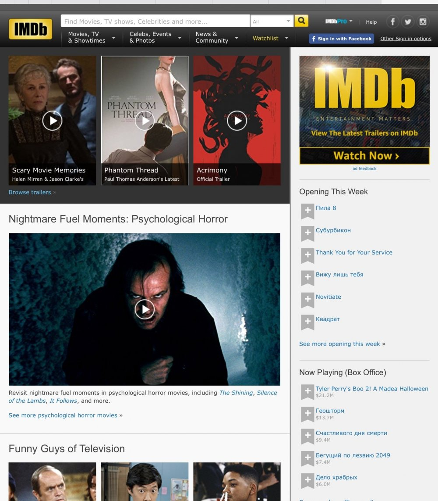

moV
О проекте
Обыкновенная ситуация, Вы увидели интересный ролик в интернете и вероятно он из какого-то фильма. Но из какого? Тут Вы включаете программу , которая помогает Вам распознать из какого фильма этот ролик!
Проблема
Отсутствие сервиса по "поиску" фильма, который идёт в данный момент.
Задачи
- 1. Распознавание звукового сигнала и сопоставление контента с базой фильмов
- 2. Генерация подборки фильмов по уже существующим критериям каждого пользователя
- 3. Сохранение ранее распознанных фильмов
Целевая аудитория
Пользователи, которым необходимо найти фильм, имея в наличие фрагмент записи или звука
Конкурентная среда
- 1. What is my movie
- 2. Кинопоиск
- 3. IMDB
- 4. Бот Telegram «Киноман 2.0»
Англоязычный сервис по поиску фильмов, разработанный компанией Valossa совместно с командой Университета Оулу, который поможет пользователю узнать название фильма, который он ищет.
Чтобы узнать название, достаточно ввести в строку на сайте какую-нибудь подсказку о ленте, вроде актерского состава или года съемок. Например: "Шон Коннери в роли Джеймса Бонда". Или: "Адам Сендлер не в комедии". И так бесконечно.
Создатели What is my movie? рассказали, что умный сайт знает больше 1000 терминов и больше 45000 названий фильмов.
«Вспоминать название трека - занудно, название фильма - просто невыносимо»
Русскоязычный интернет-проект, посвящённый кинематографу. Сайт предоставляет информацию о кинофильмах, телесериалах, в том числе кадры, трейлеры, постеры, обои, а также о личностях, связанных с кино- и телепроизводством: актёрах, режиссёрах, продюсерах, сценаристах, операторах, композиторах, художниках и монтажёрах, а также имеет возможности социальной сети.

Internet Movie Database (IMDb, в переводе с англ. — «Интернет-база кинофильмов»)(англоязычный сервис ) - крупнейшая в мире база данных и веб-сайт о кинематографе. В базе собрана информация (по состоянию на октябрь 2016 года) о более чем 3,9 млн кинофильмов, телесериалов и отдельных их серий, а также о 7,5 млн персоналий, связанных с кино, — актёрах, режиссёрах, сценаристах и др.
Бот "Киноман 2.0: фильмы и сериалы" - это удобный Бот в Телеграмм Онлайн и Телеграмм веб.
С помощью этого бота очень удобно искать фильмы на любом устройстве. Выбираете жанр, и бот выдаёт несколько случайных фильмов со ссылками на описания. Если информации недостаточно, вы можете перейти на страницу фильма на «КиноПоиске», почитать рецензии и комментарии.
Решение
Что из себя представляет moV? Рассмотрим блок-схему.
Главная страница.
Личный кабинет и его возможности.

Личная подбока фильмов.
Риски
Финансовые, технические.